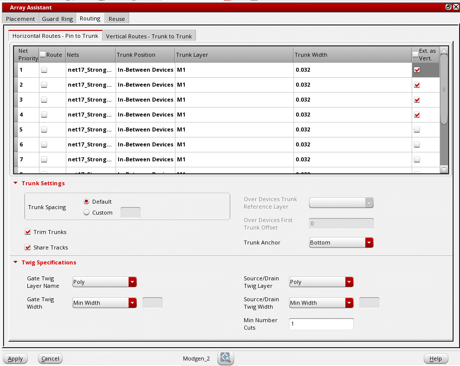
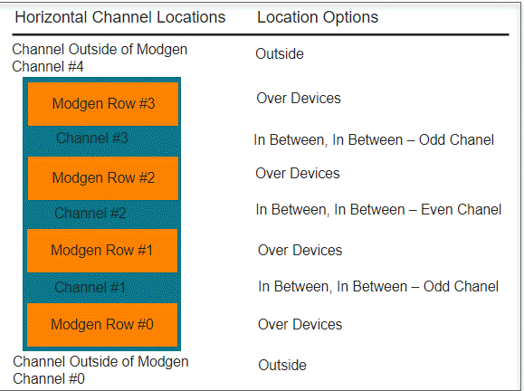
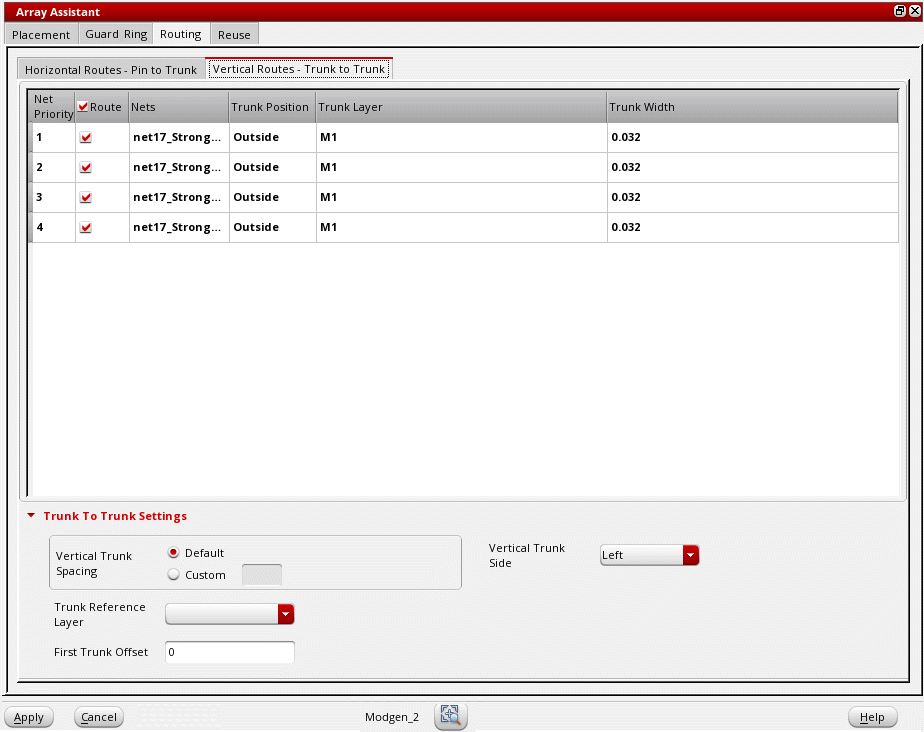

Defining Modgen Topology Settings Using the Array Assistant
(Layout EXL and Higher Tiers) The Routing tab of the Array Assistant provides options to use the pin to trunk router to define Modgen topology patterns. This involves specifying routing preferences for horizontal nets and vertical nets. Modgen topology patterns help you to visualize, configure, and store routing information. Omit this task if you want to use any other router, such as the tree router, to route the Modgen devices.
To define the Modgen topology pattern and routing options:
-
Open the Routing tab of the Array Assistant. The Horizontal Routes - Pin to Trunk tab is displayed by default.
 -
Customize settings in the net table, which lists all the channel nets in the current Modgen.
- Customize the sequence of nets in the Net Priority column by dragging nets to the required position in the table.
- Select Route in individual rows to specify the nets to be used for routing. To select all nets, select Route in the column header.
- Nets lists the names of nets that are present in the current Modgen.
-
Double-click Trunk Position and select the location for generating trunks.
The following image shows the different channel locations: - Double-click Trunk Layer for each net and select the required layer from the drop-down list.
- Specify the width of trunks in the Trunk Width field.
- Select Ext. as Vert. to specify whether the net is to be listed on the Vertical Routes - Trunk to Trunk tab.
-
Set the following options in the Trunk Settings section. These settings are applied only to the nets selected for routing.
- Set Trunk Spacing to Default or select Custom to specify an absolute value.
- Select Trim Trunks to trim the ends of horizontal and vertical trunks while routing.
- Select Share Tracks to share the horizontal trunks that are on the same layer and have the same connectivity.
-
Select a layer from the Over Devices Trunk Reference Layer list. The twigs connected to the source and drain terminals are generated in this layer.
This option is available only for nets that have Trunk Position set to Over Devices. -
Specify the trunk offset value in the Over Devices First Trunk Offset field.
This option is available only when Trunk Position of at least one net is set to Over Devices. When the field is left blank, the cell boundary of the Modgen is used as the reference layer. - Set Trunk Anchor to either Top (top-left vertex of the device row) or Bottom (bottom-left vertex of the device row).
-
Set the following options in the Twig Specifications section. These settings are applied only to the nets selected for routing.
- Select a layer from the Gate Twig Layer Name list. The twigs that are connected to the gate terminal are generated on this layer.
- Specify the width of the gate twigs in the Gate Twig Width field.
- Select a layer from the Source/Drain Twig Layer list. The twigs connected to the source and drain terminals are generated on this layer.
- Specify the source and drain twig width values in the Source/Drain Twig Width field.
- Specify the Min Number Cuts for the vias connecting the twigs to other objects.
-
Switch to the Vertical Routes - Trunk to Trunk tab to specify routing preferences for vertical nets.
The net table settings are similar to the Horizontal Routes - Pin to Trunk tab. -
Specify the following options in the Trunk To Trunk Settings section:
- Set Vertical Trunk Spacing to Default or select Custom to specify an absolute value.
- Specify the trunk offset by selecting the reference layer from the Trunk Reference Layer list and specifying the device-to-trunk offset of the first device in the First Track Offset field.
- Select a Vertical Trunk Side to specify the side along which vertical trunks are to be generated.
- Click Apply to apply the routing settings.
Related Topics
Automatic Generation of Modgens using the Array Assistant
Modgen Placement Settings in the Array Assistant
Creating Guard Rings Using the Array Assistant
Reusing Modgen Templates Using the Array Assistant
Return to top